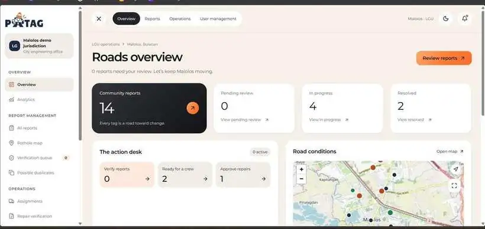
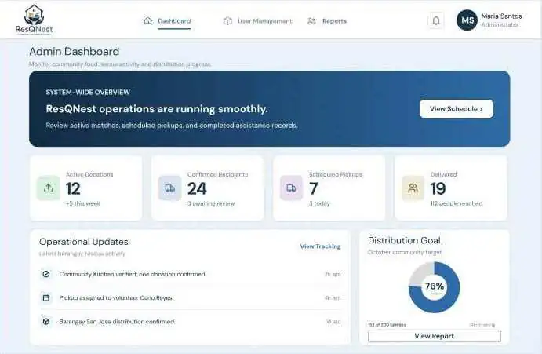

Programming & Web
Building the foundations of web pages and application logic.
HTMLCSSJavaPHP
I'm Jonas Marco F. Valdellon — an IT student exploring data, user experience, and the systems that make technology useful.
AREAS OF INTEREST
I'm a third-year Bachelor of Science in Information Technology student who appreciates simplicity, minimalism, and practical solutions. I chose IT because technology continues to shape the way people live, work, and solve problems.
I'm especially interested in data analytics and how information can be organized and interpreted to support better decisions. I'm also exploring UI/UX research and database administration, with a long-term goal of becoming a successful entrepreneur through technology-driven ideas.
A growing set of tools and technologies I'm learning and using in project work.
Building the foundations of web pages and application logic.
Exploring data storage and backend-connected experiences.
Tools for checking software, writing code, and collaborating.
Planning and communicating interface ideas visually.
Skills shown reflect my current learning and project exposure. I'm continuing to develop them through practice.
Academic projects where I contributed to system testing, workflows, and prototype evaluation.

PATAG / ADMIN OVERVIEW↗Road Issue Reporting & Maintenance
A web and mobile system prototype that allows citizens to report potholes and road damage, while helping local government and maintenance teams review reports and track repair progress.

RESQNEST / ADMIN DASHBOARD↗Community Food Donation & Distribution
A web-based system concept that organizes food donations and helps coordinate distribution through donor posts, recipient requests, allocation, and volunteer delivery updates.
These galleries use the project screenshots you supplied. ResQNest images are cropped from the shared Figma preview captures to focus on the actual interface screens.
I'm open to connecting with people interested in technology, data, design, and new ideas. Feel free to reach out.
Send me an email ↗